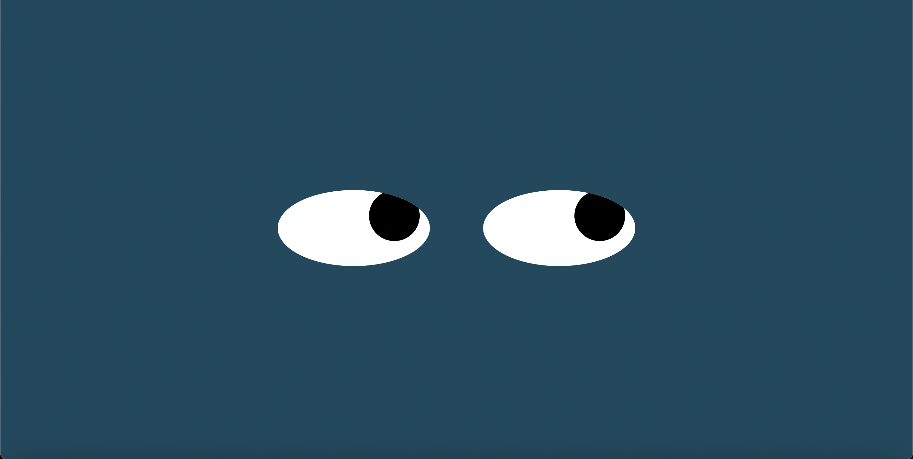

Eye Ball Motion
Check it out by pressing on "Click Here"

Project's Overview
For these Eyes Motion project, I had applied my knowledge and skills
to work with cursor mouse method.
How to Run:
- Move the cursor around to see the eyes move along with the arrow
Extra features like creating some eyebrows to move along with motion of the eye balls as the crusor moves to a certain direction.